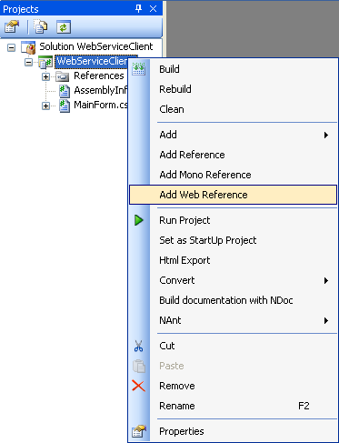
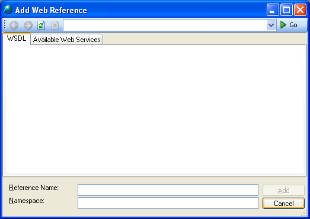

To consume or call a web service from your application you can
add a web reference to your project.Once the web reference has been
added to your project the web service will be available to you as a
web service proxy class, which you can create and execute any of
its methods. Executing a method on this class will call the
corresponding web service method and return the result. If the web
service changes you can refresh the web reference which recreates
the web service proxy class.
You can only add web references to C# and VB.NET projects.
Adding a Web Reference
-
With a project open in SharpDevelop, open the
View
menu and select
Projects...
to open the Projects Explorer.

-
In the Projects Explorer, right click the project and select
Add Web Reference
.

This opens the Add
Web Reference dialog box.
.
-
Type in a URL and browse for a web service by pressing the
return key or by clicking the
Go
button . The screenshot below shows the
Add Web Reference
dialog after the URL
http://localhost/Maths.asmx
has been entered and the web service on the local machine has
been found and displayed after clicking the
Go
button.
- Change the name of the web reference by changing the text in
the Reference Name text box. The default value is set to
the web service host name, which in the screenshot above is
localhost.
- Change the namespace to be used for the web proxy class by
changing the text in the Namespace text box. The default
value is set to the root namespace of the project followed by the
web service host name.
-
Click the
Add
button to add the web reference to your project. SharpDevelop
will then create the web reference and display it in the
Project Explorer
. Expanding the web reference in the
Project Explorer
you can see the files that SharpDevelop has generated.
Now you can use the web service proxy class in your
application.
Refreshing a Web Reference
If the web service changes you can recreate the web service
proxy class to reflect any new methods or new parameters by
refreshing the web reference.
-
Open the
View
menu and select
Projects...
to open the Projects Explorer.
- Expand the Web References.
-
Select the name of the web reference you want to refresh, right
click and select
Refresh Web Reference
.
-
The web service proxy will then be updated to reflect the
changes made to the web service and you can update your
code.
Removing a Web Reference
-
Open the
View
menu and select
Projects...
to open the Projects Explorer.
- Expand Web References.
-
Select the name of the web reference you want to remove, right
click and select
Delete
.
If your application has several web references you can
delete all of them in one step by selecting Web
References in the Project Explorer, right clicking
and selecting Delete.